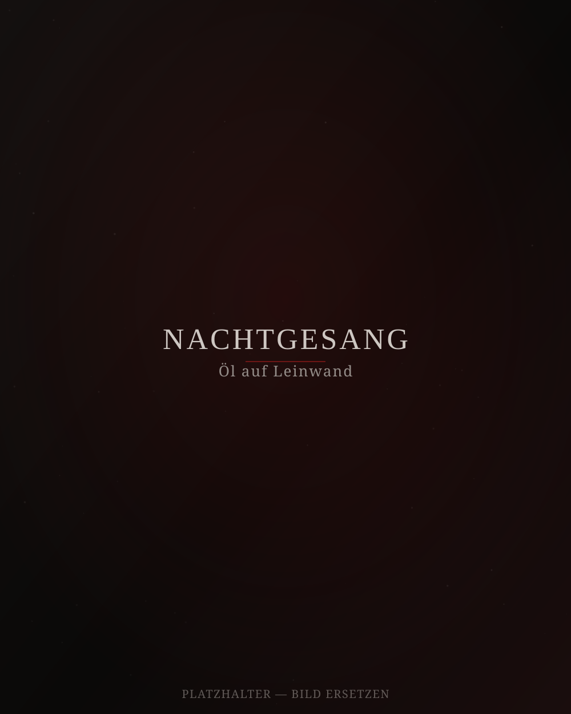
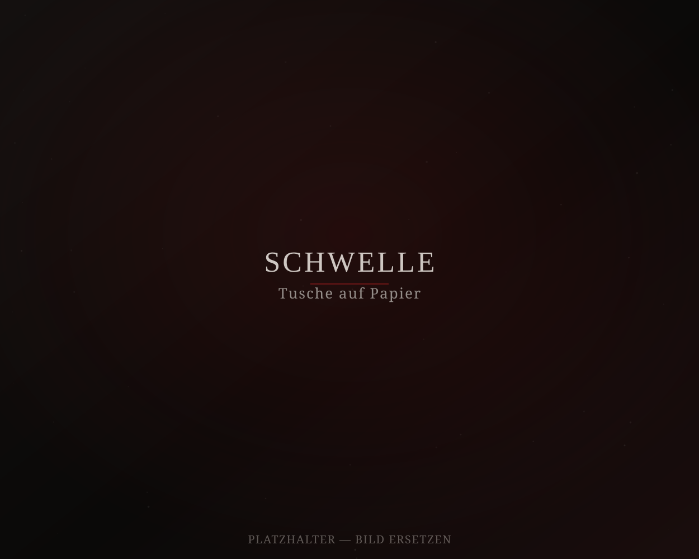
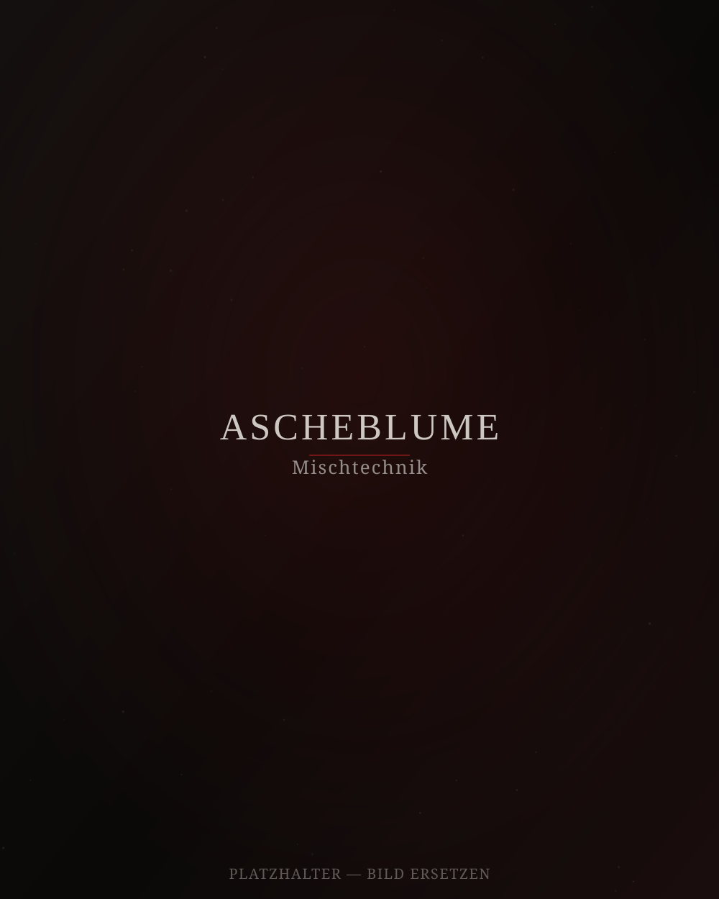
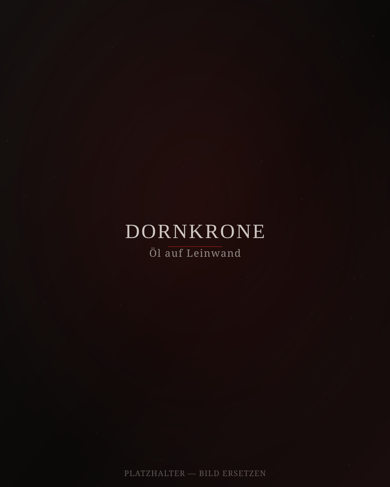
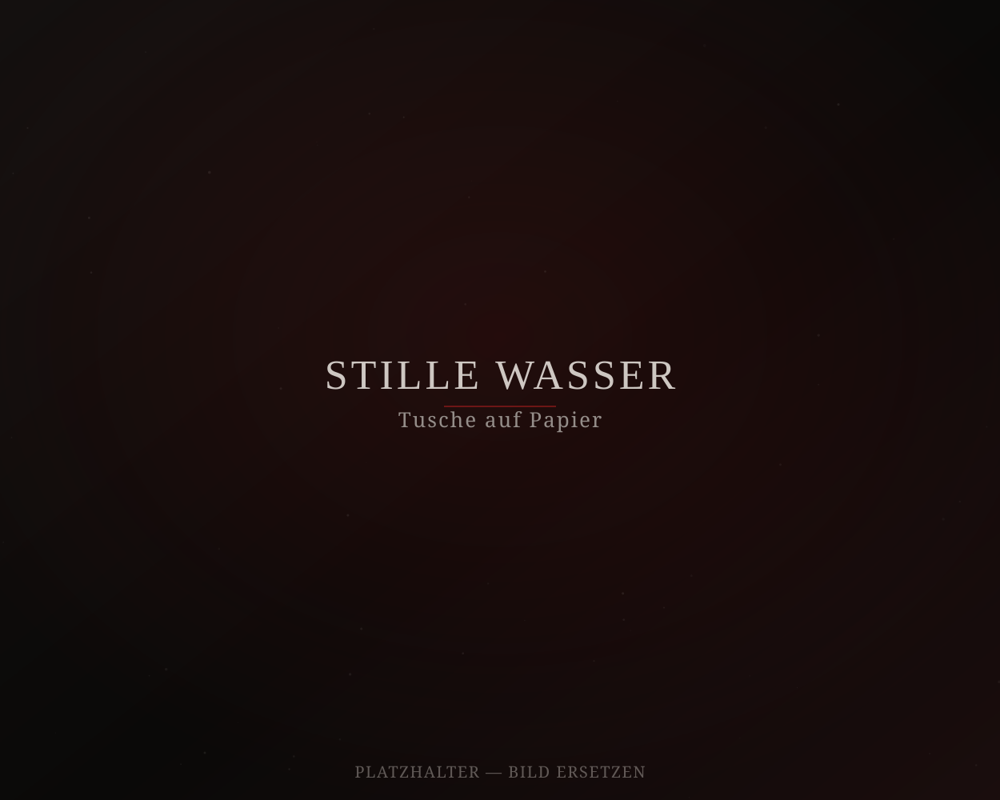
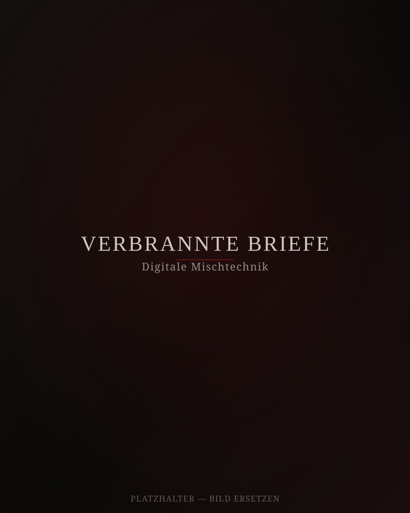
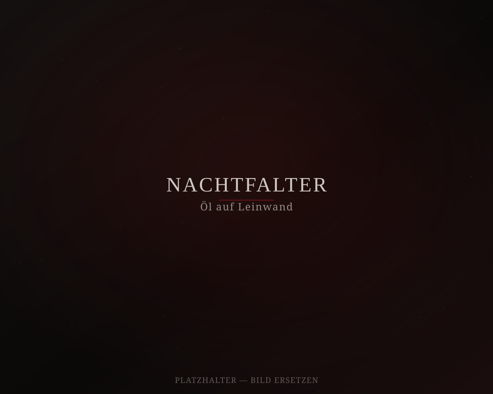
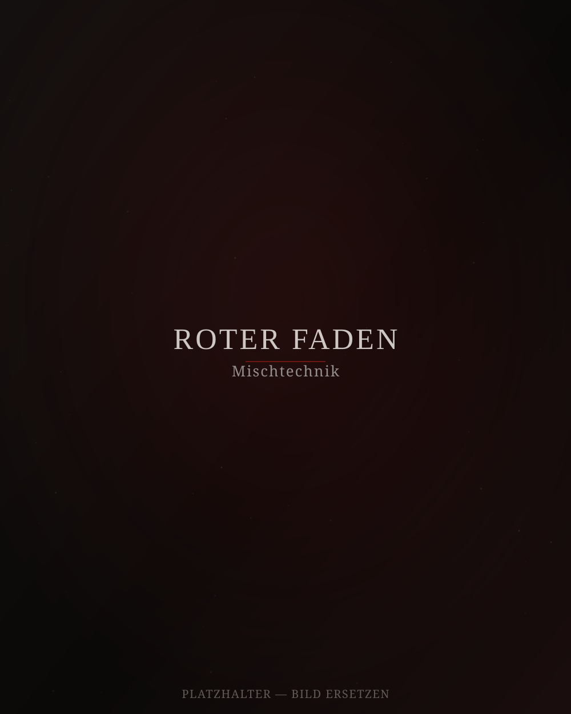

Nr. 07
Nachtgesang
Eine Studie über Dunkelheit als Raum, nicht als Abwesenheit — Schichten von Schwarz, durchbrochen von einem einzelnen roten Faden.
Werkverzeichnis
Eine Auswahl aktueller und vergangener Arbeiten — von Öl auf Leinwand über Tusche bis zu digitaler Mischtechnik.

Eine Studie über Dunkelheit als Raum, nicht als Abwesenheit — Schichten von Schwarz, durchbrochen von einem einzelnen roten Faden.

Reduzierte Linienführung, die den Moment des Übergangs festhält — zwischen zwei Räumen, zwei Zuständen.

Verbrannte Pigmente und Blattgold treffen auf grobe Leinenstruktur — eine Arbeit über Vergänglichkeit.

Zerbrechlichkeit und Widerstand in einer Geste — entstanden nach einer Reihe von Skizzen im Winteratelier.

Konzentrische Linien wie Wellen, die sich nie ganz schließen — eine Meditation über Ruhe und Spannung.

Eine Serie über Erinnerung und Verlust, in der analoge Texturen digital neu zusammengesetzt werden.

Feine Flügeltexturen lösen sich im dunklen Grund auf — Licht als kurzer, flüchtiger Moment.

Das jüngste Werk der Serie — ein einzelner roter Strang, der sich durch mehrere Bildschichten zieht.